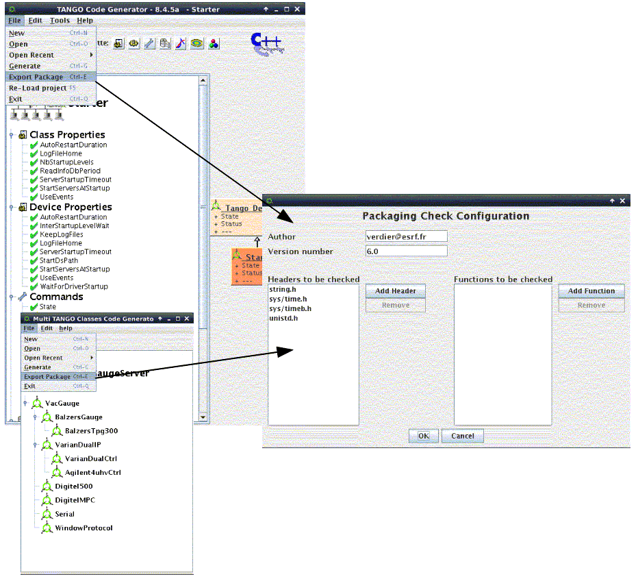
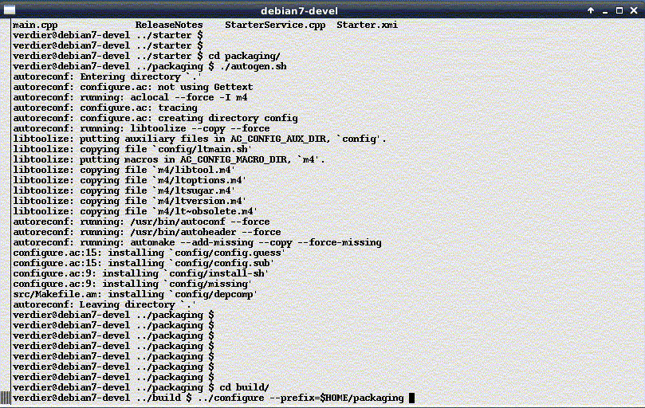
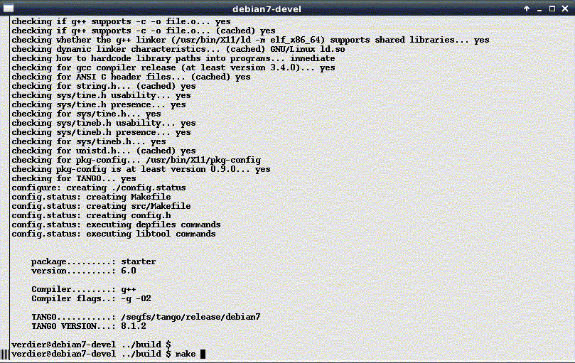

Tango Server Packaging¶
Since Pogo-8.3.0 on Linux, Pogo allows you to create packaging files to be used with autotools
Set the environment variable PKG_CONFIG_PATH
- e.g. for tango.pc file : export PKG_CONFIG_PATH=$TANGO_LIBS/pkgconfig
You can find many examples on the web on pkg_config_path management. In Pogo or Multi classes GUI, use File menu and Export Package item.
A panel will be launched to define to configure packaging.

- After clicking on OK button, a new directory
packagingwill be - created.
You can use autotools commands (autogen, configure, make, make install, command:make distcheck to build a reliable packaging for your server.

